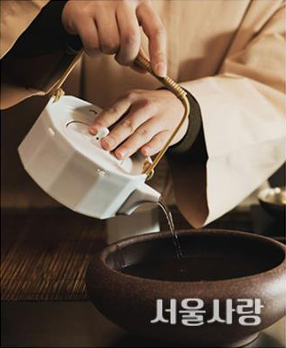

블렌딩 티의 매력을 극대화한 공간
파운드 로컬
기획력을 더한 실생활 소품을 소개하는 챕터원 에디트 1층에는 카페 ‘파운드 로컬’이 자리한다.
이곳은 자체 제작한 블렌딩 티와 밀크티 등을 선보이는데, 여기서 주목할 점은 국내 작가의
공예 작품을 차와 함께 경험할 수 있다는 것. 파운드 로컬의 대표 차로 꼽히는 호지 블렌딩 티는
호지차에 카카오 닙스, 마리골드 등을 블렌딩했으며, 나나민트와 중국 저장성 건파우더 녹차가
어우러진 모로칸 민트티, 발효한 루이보스에 시나몬 등을 조합한 루이보스 블렌딩 티 등도
맛볼 수 있다. 각 차는 티포트와 찻잔, 거름망 그리고 차 마시는 알맞은 때를 알려주는 모래시
계와 함께 제공한다. 카페 담당자는 “차를 마시는 행위가 주는 본질적 즐거움에 집중할 수
있으면 좋겠다”고 귀띔하기도. 다양한 맛이 어우러진 블렌딩 차의 매력이 궁금하다면 추천한다.
서초구 나루터로 65 | 02-3447-8005

의미를 되새기며 마시는 중국차의 세계
인야
‘인야’는 중국어 ‘飮雅’를 그대로 발음한 것으로 ‘우아함을 마시다’는 뜻을 담고 있다. 중국 산지에서 차 마스터가
직접 시음해본 후 엄선한 찻잎만 수입해 중국 특유의 차맛을 경험할 수 있다. 이곳에서는 차 가공 방법과 발효 정도에
따라 녹차, 백차, 황차,청차, 홍차, 흑차 등으로 분류한다. 스트레스 등으로 발생한 열을 낮추는 데 효과적인 백모단,
기름진 음식의 느끼함을 해소하는 우롱차의 일종인 봉황단총은 인야가 중국 차를 처음 접하는 이에게 추천하는
메뉴. 이 외에도 중국 황제에게 올리던 진상품 대홍포, 세계 최초의 홍차이자 얼그레이의 시초 랍상소우총, 중국
10대 명차에 속하는 기문 등을 맛볼 수 있다. 또한 청나라 시대 다식 ‘솽피나이’, 광둥어로 팬케이크를 뜻하는
‘반지’ 등 다양한 디저트도 선보인다.
마포구 신촌로2안길 12 | 02-3141-0915
구석구석 민화 작가의 작품과 함께하는
민화부티크
고즈넉한 익선동 골목 사이, 아기자기하면서도 화려한 색감의 소품이 시선을 사로 잡는 곳이
있다. 다채로운 민화 작품과 이를 소재로 만든 제품을 활용해 공간을 꾸민 ‘민화부티크’가 바로
그곳. 이곳을 운영하는 조여영 작가의 작품과 함께 매월 이달의 민화 작가를 선정해 카페 곳곳에
전시하며, 민화 특유의 생소함을 없애기 위해 애쓰고 있다. 추천 메뉴는 홍차와 수제 청차.
‘사랑의 찬가’라는 애칭이 붙은 웨딩 임피리 얼을 비롯해 퀸앤, 로열 블렌드 등 영국 전통 홍차를
맛볼 수 있다. 또 인삼·대추·솔잎·복분자·레몬·생강 등을 청으로 만들어 제공하는 차는 각각
무병장수, 입신양명,남녀 화합, 가정 화합의 의미를 부여해 더욱 특별하다. 차를 담는 다기에
까지 손수 민화를 그려 넣어 고풍적인 분위기를 만끽할 수 있다.
종로구 삼일대로26길 24 | 02-762-298